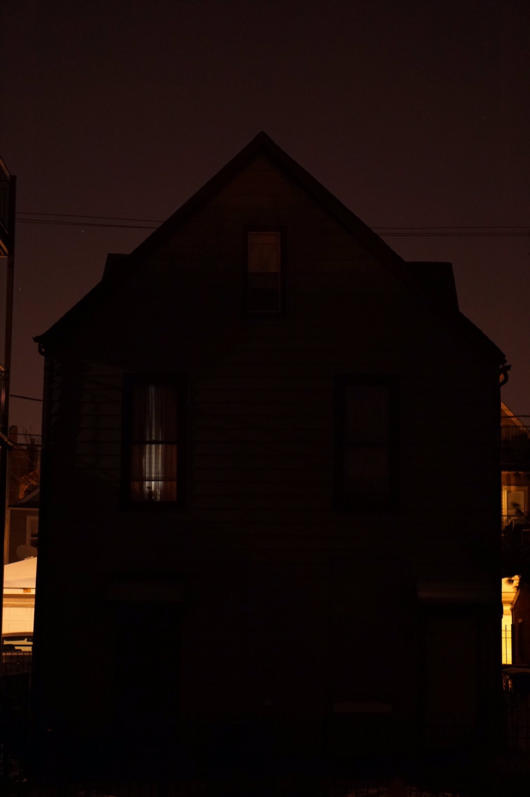
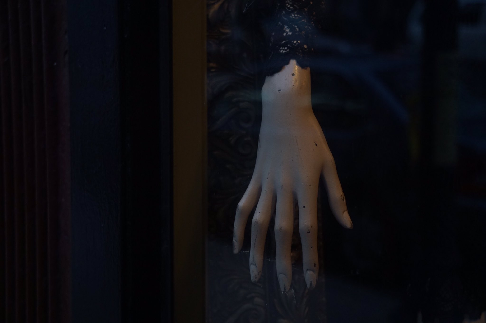
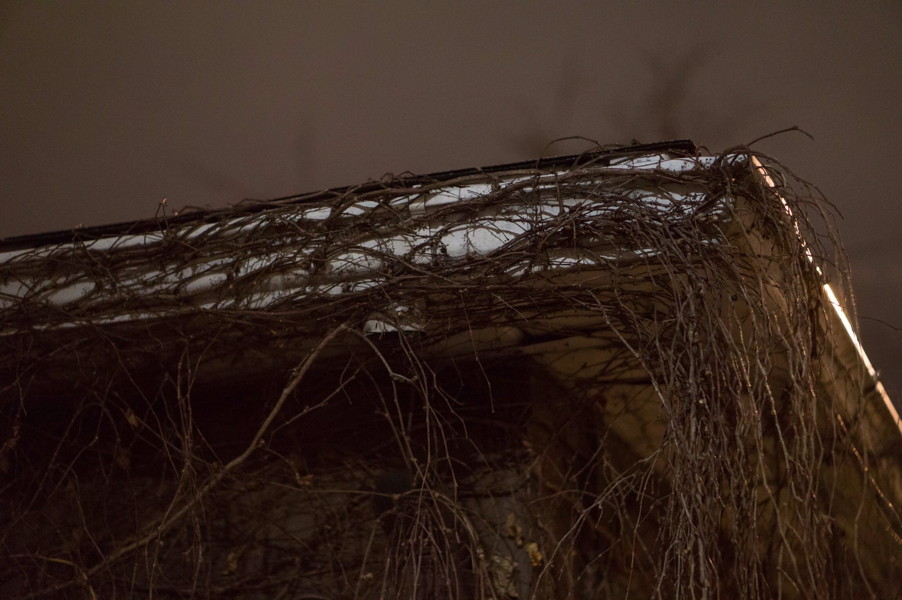

The house didn't exist. Where the silhouette stood, ominous and towering, there was only an empty lot. He knew because he passed that empty lot on his way to work every day. It wasn't real, he told himself. Even as a light flickered to life in the window.
She stared at the mannequin. Over night something had happened to it, but she couldn't say what. And then she saw the nails. The night before they had been smooth and immaculate. Now they were chipped. Like it had been digging away at something in the dark.
At night she could hear the vines growing, encircling the house, choking the windows and gutters. They bore no leaves.
